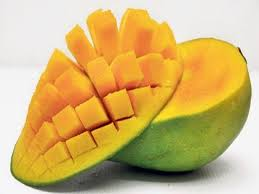
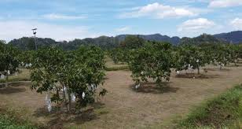

About Harum Manis Mangoes
Harumanis mangoes are a highly esteemed variety of mangoes that are primarily cultivated in the northern region of Malaysia, particularly in Perlis. Renowned for their exceptional sweetness and aromatic flavor, these mangoes have earned a reputation as one of the finest mango varieties in the world.
Why Harum Manis Mangoes Are Unique
- Sweet and aromatic flavor
- Perfect balance of texture and juiciness
- Special cultivation methods unique to Perlis